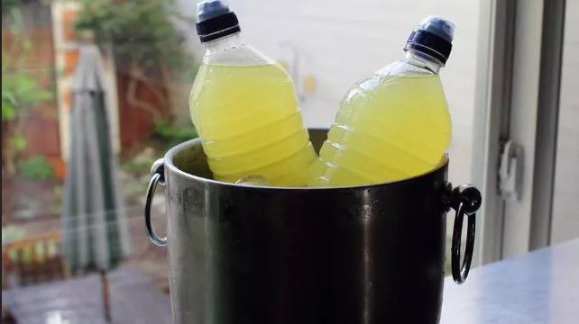

Greaterade

Description
The Golden State Warriors' decision to ban commercial sports drinks and make their own with Himalayan sea salt inspired me to try my own--with less sugar. You can tweak this recipe to create your perfect formula.
Ingredients
- 8 cups fresh cold water, divided
- 3 tablespoons honey
- ½ teaspoon fine Himalayan pink salt
- ¾ teaspoon calcium magnesium powder (Optional)
- 1 pinch cayenne pepper
- ¾ cup freshly squeezed orange juice, strained
- 2 medium lemons, juiced
- 2 medium limes, juiced
Steps
- Pour 1 cup of the water into a large pot. Add honey, salt, calcium magnesium powder, and cayenne. Place pot over low heat and whisk until ingredients have dissolved. Remove from heat and allow to return to room temperature.
- Add juices to room temperature mixture in pot. Pour in remaining 7 cups water and whisk until well blended.